The Weekend Routine: Patrol, Bark, Bathe, Repeat
It was another classic weekend morning. Neet, the cunning commander with ears like satellite dishes, paced in front of the door. Buddy, his best friend, a golden goofball with the heart of a lion, was circling his leash. He wanted the park before Neet found another reason to inspect the door.
“Perimeter check,” Neet announced solemnly. “We move at dawn.”
“It’s 9:42,” Buddy barked, already halfway tangled in his leash.
Neet inspected the bottom of the door again. Buddy stopped circling. The leash kept one final, regrettable appointment with his ankle.
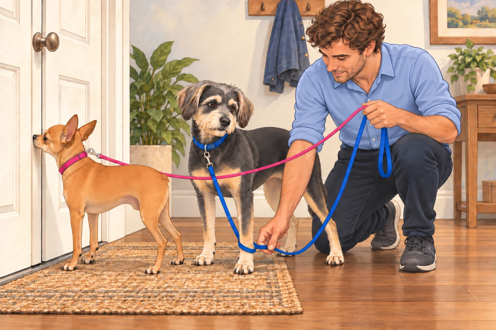
They exited with their human, Neet checking each doorway while Buddy pulled toward the park. This wasn’t just any park. It was Green Zone Alpha in Neet’s operational logs. For Buddy, it was “The Happy Pee Grass Place.”
The walk began like it always did:
Bark at the squirrels.
Bark at the birds.
Bark at the wind.
Bark at an inflatable duck on someone’s balcony (Neet insists it’s spying for the manager).
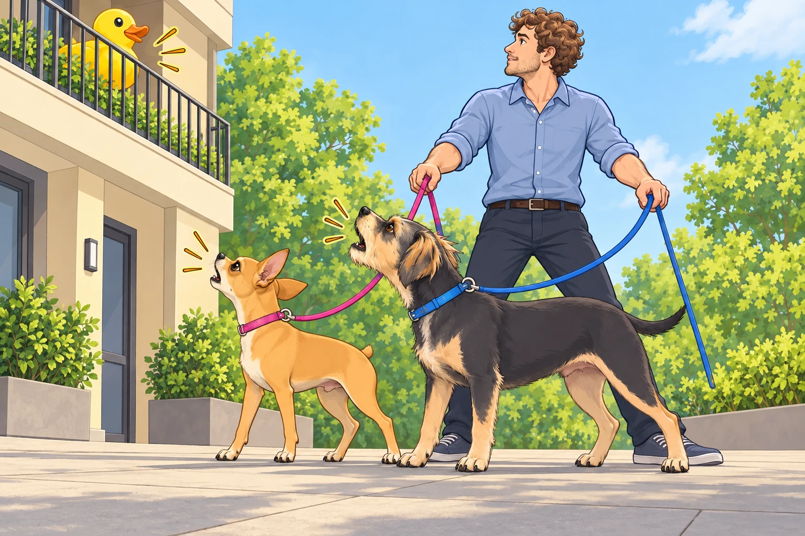
As they approached the far fence of the park, Buddy spotted a labradoodle in a bow tie.
“INTRUDER!” he screamed and bolted.
Neet followed, because dignity be damned, if Buddy’s charging into chaos, he wasn’t missing out.
Their human brought both leashes short. The labradoodle stood behind the fence, entirely uninvaded, while Buddy arrived at the limits of international diplomacy.
The bow tie had little yellow ducks on it.
Buddy stopped barking. “Oh. That's festive.”
The labradoodle offered a polite sniff through the wire. Buddy sniffed back, then tried to show Neet where the excellent grass was.
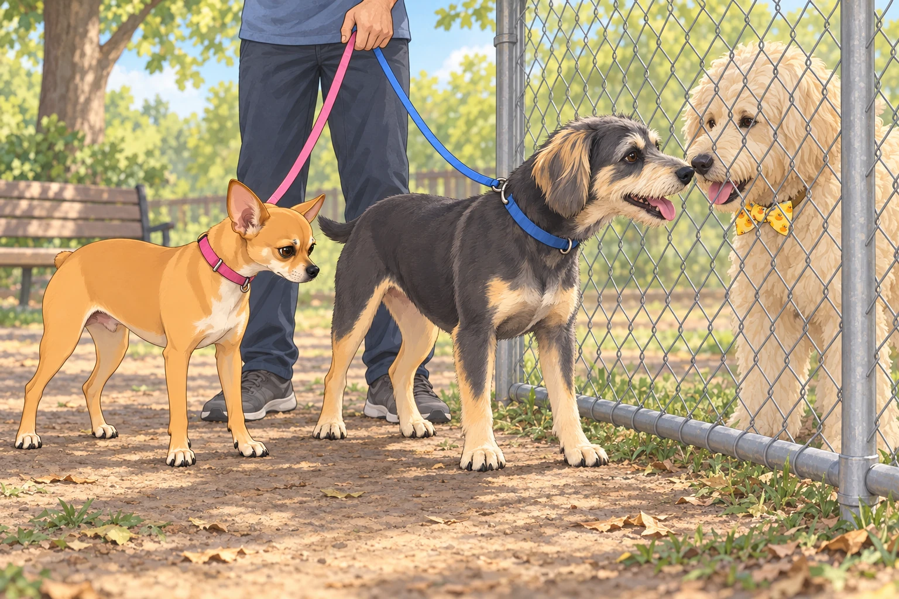
Neet inspected the ducks. Balcony duck. Neck ducks. A network.
“Don't trust him,” he whispered.
Buddy went on sniffing. He had come for a walk, and here was somebody willing to enjoy one. By the time their human turned for home, Buddy had made a friend and Neet had opened a case.
The Bath and Betrayal
After their patrol came the dark hour: The Shower Ritual.
Neet hated it. Not because of the water— but because it was undignified. He’d spent all morning asserting dominance over lampposts and now he smelled like oatmeal shampoo?
Buddy, on the other hand, believed every bath was a test of faith. He’d whimper, yodel, and attempt to fake his own death. The water barely touched his back and he collapsed like a Victorian maiden struck by scandal.
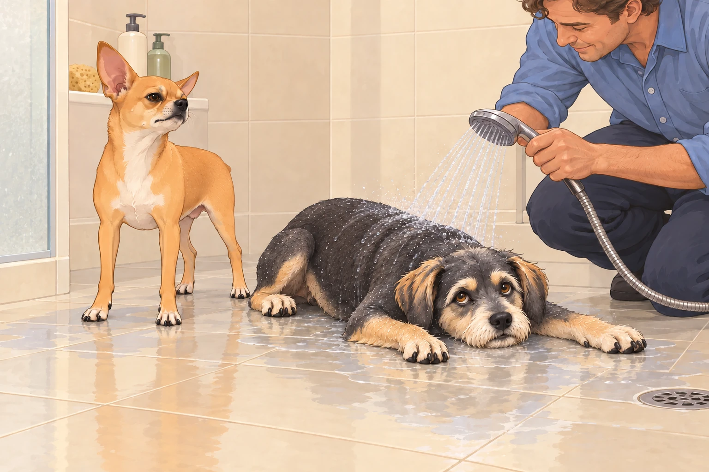
Nail trims? Neet growled in Morse code. Buddy sat on the clippers. Their human held out a hand. Buddy looked helpfully around the bathroom for the missing object.
But the real betrayal came when they were wrapped in towels like canine burritos and told “You look so cute!”
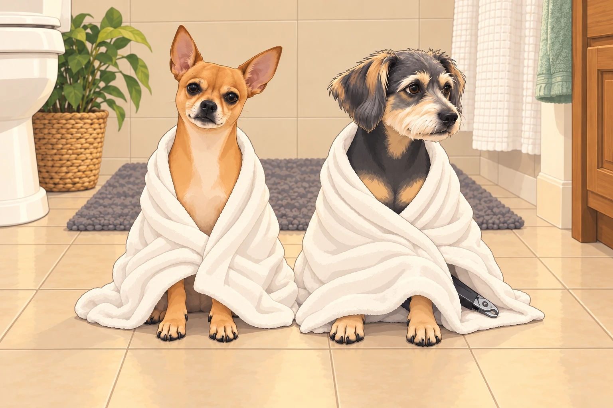
“We are warriors,” Neet muttered. “Not cuddle muffins.”
Buddy tried to stand. The towel held his front paws together; he achieved a thoughtful wobble.
Their human opened it, rubbed him dry and set the clippers well out of reach. Buddy leaned into the hand despite himself. Neet looked away, then edged his wet shoulder toward the other towel.
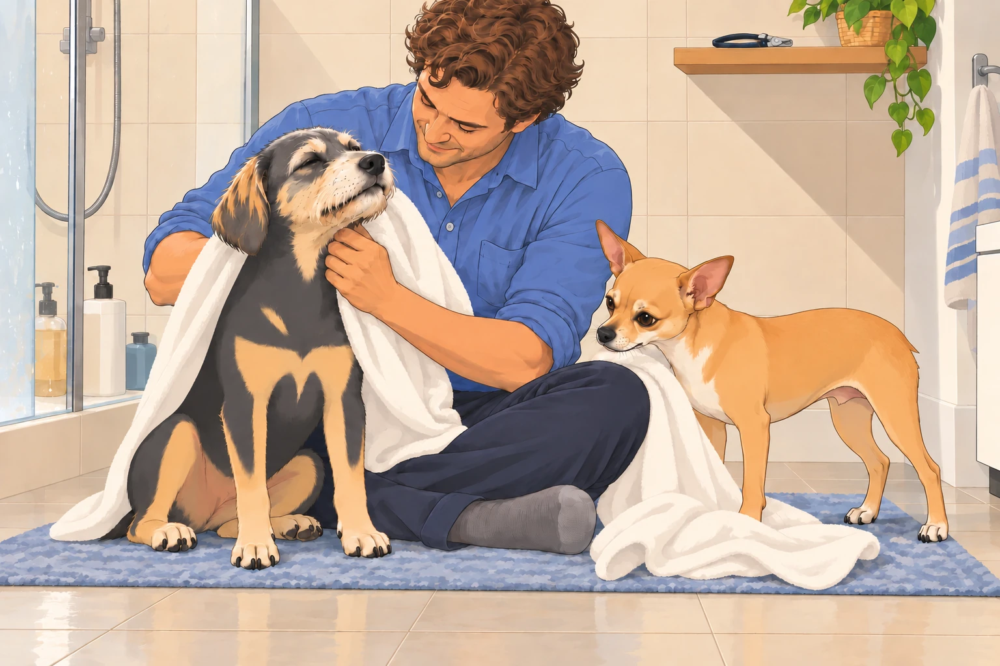
Being cared for was acceptable. Advertising it was the problem.
The human stayed on the bathroom floor until both dogs were dry. When he finally stood, they followed him so closely that he had to take three very small steps to reach the doorway. Warriors required an escort.
Enter: The Manager
That evening, clean and still offended, they followed their human into the lobby. Neet was recovering his usual stride when he saw the manager.
The Manager.
A man so square he could be legally classified as a geometry lesson. Name tag: Grubbs. Attitude: “If it wiggles and wags, it violates policy.”
He froze, mid-conversation with Mrs. Glenda (unit 5B, smells like hard candy). His eyes narrowed. Then they widened.
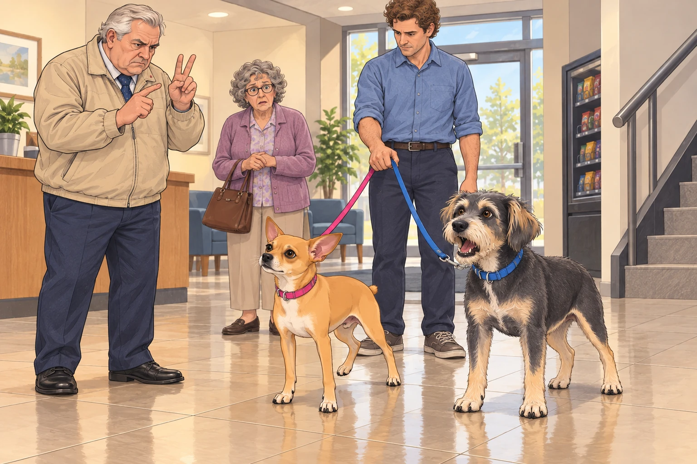
“There’s two of them,” he said. “This building only allows one dog per apartment.”
The words hit like a thunderclap. Buddy gasped audibly. Neet stopped mid-pee.
“Our lease said nothing of this,” Neet growled (silently, because barking would be counterproductive).
“You’ll be getting a notice,” Grubbs said, and vanished into the stairwell like a low-budget villain.
Operation: Shadow Dog
The next morning, everything changed.
Neet went dark.
He refused to be seen in the hallways during business hours. If Buddy went for a walk, Neet waited— five minutes later, he’d sneak out using Staircase Route Bravo, ducking past the vending machine like he was on a stealth mission in “Call of Doody: Park Ops.”
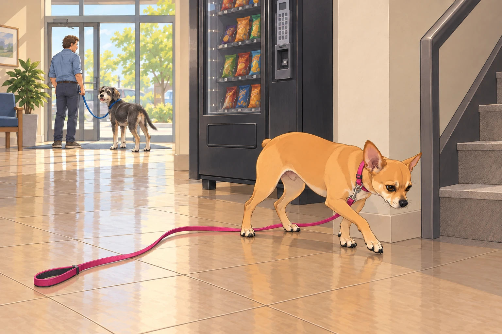
He even wore a hat once. It was a baby-sized beanie, and it didn’t help. But it made Buddy laugh so hard he knocked over a houseplant.
Neet looked at the pot, the spilled soil, and Buddy.
“You’ve compromised my position.”
“Your position has a pom-pom.”
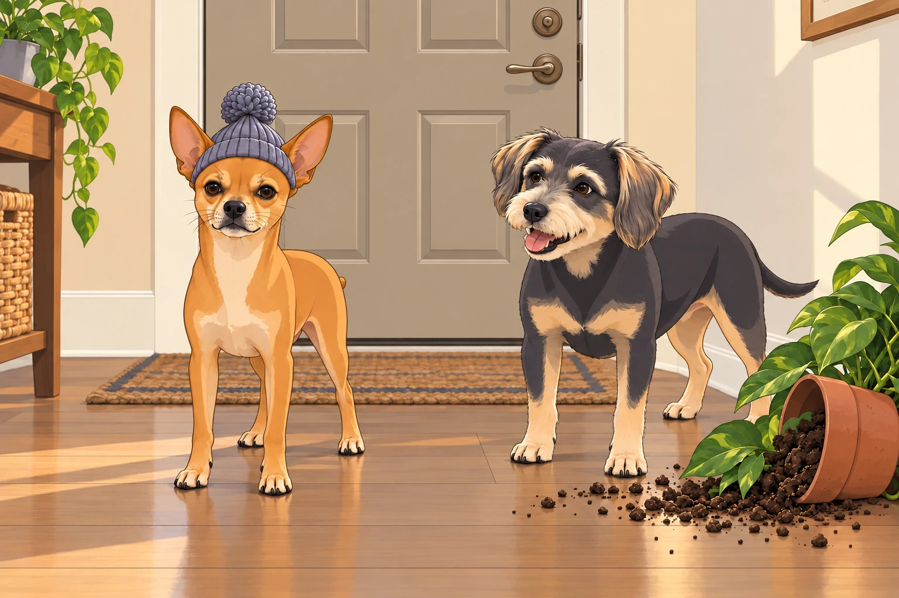
Neet’s entire behavior shifted. No more barking in the hallway. No more window surveillance. He even refused to chase the neighbor’s cat, Mr. Pickles, on Mondays.
“Too risky,” he whispered. “Pickles has ties to management.”
Buddy's first solo outing lasted only as far as the park gate. The labradoodle was there again, bow tie immaculate. Buddy began the usual greeting, then looked behind him.
No Neet. Nobody accusing the bow tie of espionage. Nobody stealing the good patch of shade before Buddy could claim it.
Buddy stood at the gate until their human noticed.
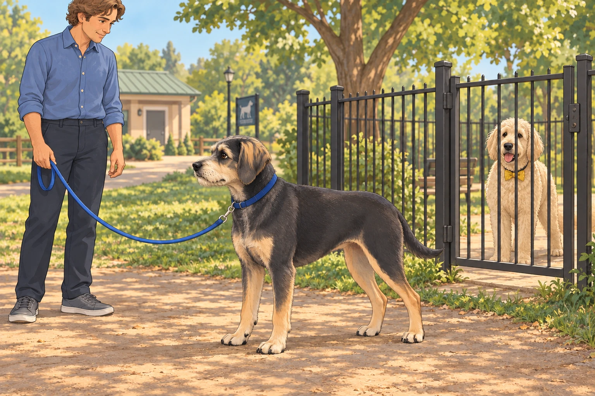
“Waiting for him?”
Buddy turned toward the building.
On the next outing, he waited at the bottom of Staircase Route Bravo. Neet appeared five minutes later, pressed so close to the wall that he had collected a cobweb on one ear.
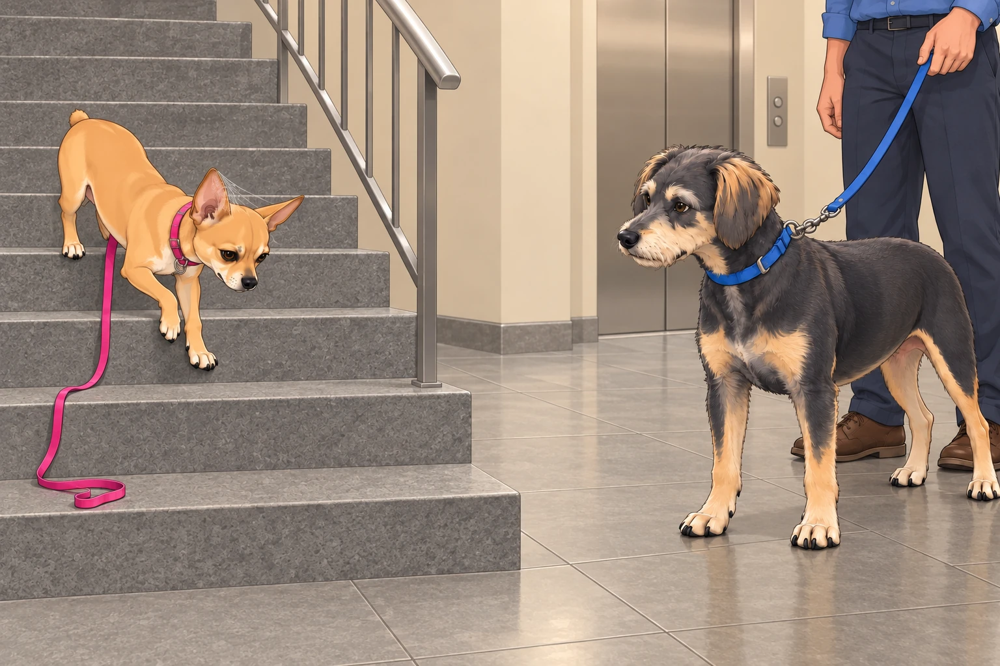
“Clear?” Neet whispered.
“Eventually.”
They reached the park together, late enough that the labradoodle had gone. Buddy decided secrecy was very efficient at losing the things they actually wanted.
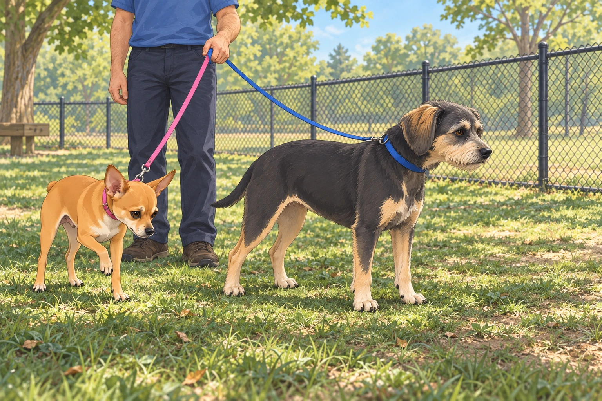
Buddy’s Alternate Plan
Buddy, meanwhile, had other ideas.
“If we’re gonna be just one dog,” he reasoned, “we have to become one dog.”
So, he constructed a costume using an old hoodie, a broom, and three hot glue sticks. The plan? Neet rides on his back while Buddy walks on two legs. “We’ll be a tall spaniel mix named Todd.”
“Why Todd?”
“Grubbs will be counting dogs. He won’t be expecting Todd.”
Neet considered this long enough for it to become the plan.
Buddy dragged the hoodie into the middle of the room. The broom was supposed to hold the shoulders up; the glue sticks were supposed to prove he had considered engineering. All three remained solid. No one had supplied a glue gun, a troubling oversight in an otherwise sophisticated operation.
Their human retrieved the broom before it knocked a lamp over. Buddy continued with the hoodie.
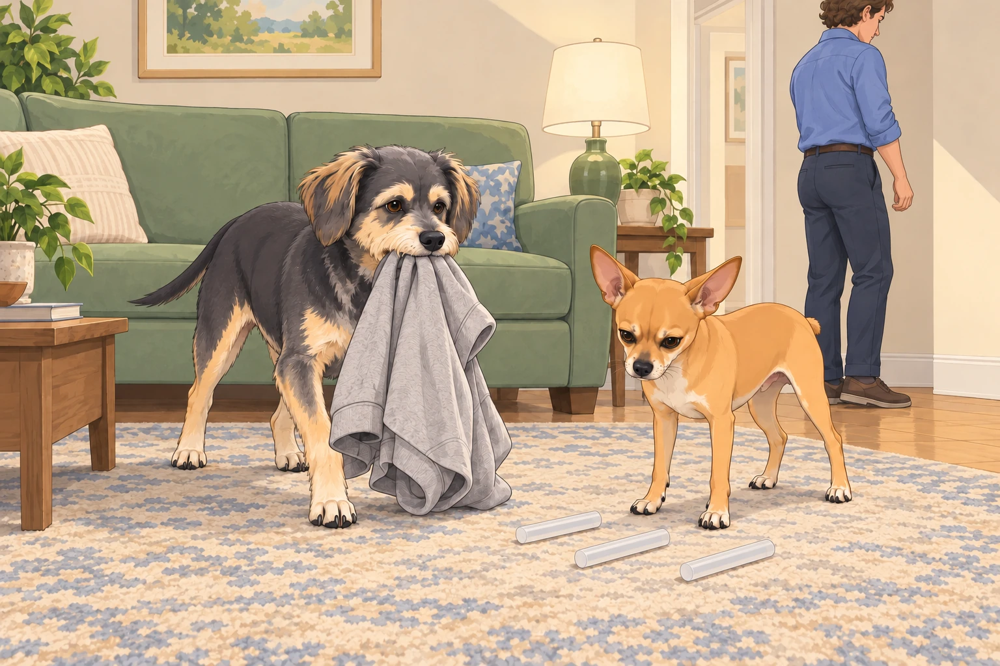
For rehearsal, he stood on his hind legs against the couch while Neet climbed onto the cushion behind him. The hood slid over Buddy's eyes.
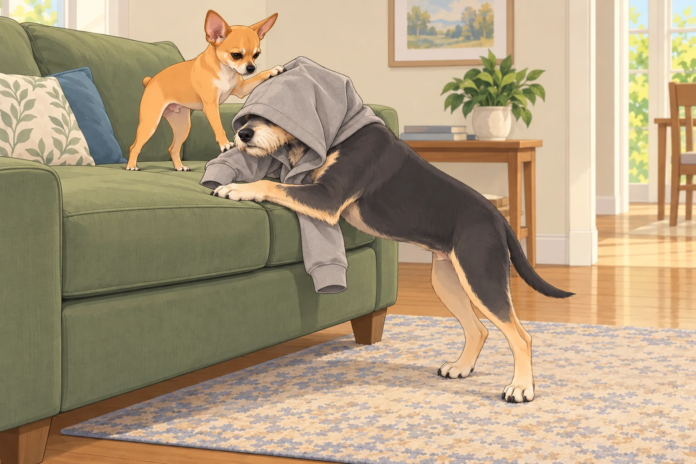
“I can't see.”
“Todd doesn't need to see. Todd needs to look plausible.”
Buddy lowered himself and nudged the hood back. “I'd like Todd to reach the park.”
Neet rearranged a sleeve. Buddy held still, concentrating so hard on becoming one dog that he forgot to object to the second dog getting on his back.
They got as far as the front door before Neet fell off and Buddy panicked, screaming “ABORT TODD! ABORT!”
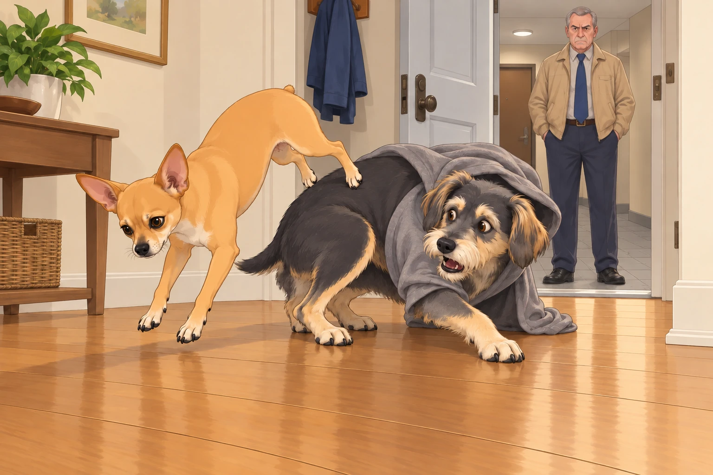
The manager, returning from a suspiciously timed mailbox check, spotted them mid-crash.
The hoodie settled between two very separate dogs.
“I’m watching you,” he said.
They both peed.
Todd had lasted four seconds and required two cleanups.
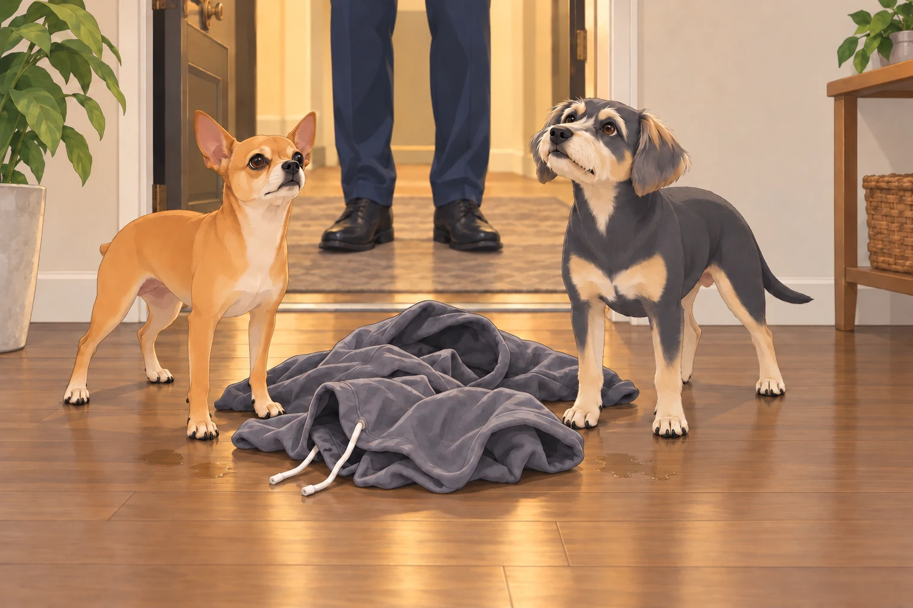
Their human crouched beside them, lifted the hoodie clear and checked each dog before addressing the wet floor. Buddy's legs were fine. Neet's pride was unavailable for inspection.
“Let's walk normally,” the human said.
Buddy stepped to the door. Neet tucked his head under the fallen sleeve.
Buddy went back, put his nose beneath the fabric and lifted it enough to find his friend's eyes.
“No one liked Todd,” Neet said.
“I liked his ambition.”
Together they abandoned the costume. Buddy left one paw inside a cuff until their human freed it. Even resigning from Todd required assistance.
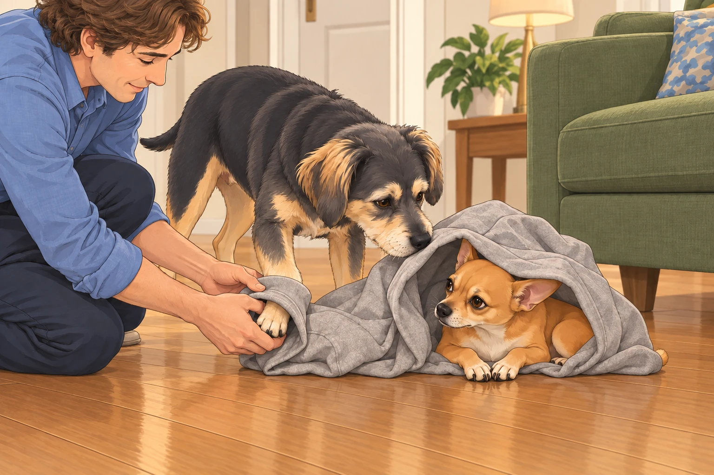
Neet’s Descent into Paranoia
Over the next week, Neet devolved into full espionage mode.
He began carrying small items in his mouth— a rolled-up napkin (“classified documents”), a sock (“disguise kit”), and once, Buddy’s chew bone (“insurance”).
Buddy followed the insurance from room to room. At least now he always knew where the secret agent was.
At supper, Neet took the bone beneath the couch. Buddy lay down outside it.
“That's my insurance.”
Neet pushed it forward two inches.
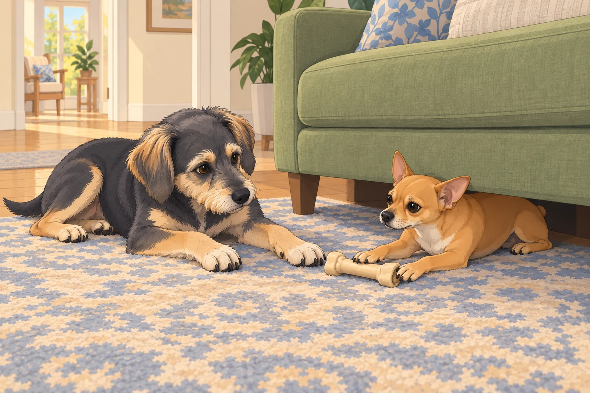
Buddy accepted the settlement. Then he remained there, chewing, while Neet listened to the hallway.
A door clicked. Neet tensed. Buddy stopped chewing.
Another door clicked farther away. Nothing came of either one. Their human set the dogs' bowls beside the couch and sat down nearby with his own dinner.
Neet's nose emerged first. Buddy moved over to give him room. For ten minutes there was no investigation, only bowls, chewing and the occasional hopeful glance at the human's plate. Buddy decided they needed more of those ten minutes.
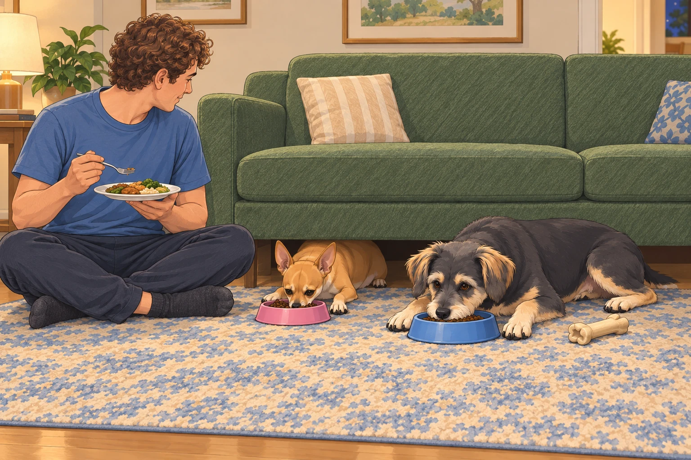
If someone knocked at the door, Neet flattened under the couch like a pancake. If he heard the elevator ding, he would roll silently into the laundry basket. One time, he chewed a hole into a grocery bag and sat inside it for twenty minutes, just in case Grubbs walked by.
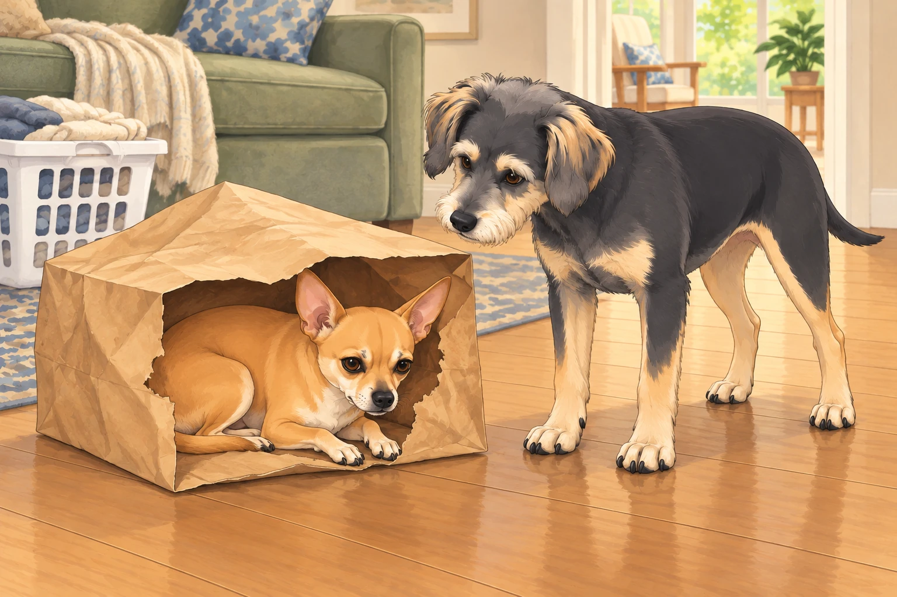
The Grand Counter-Offensive
Eventually, their human had enough.
He prepared a firm letter to the board, complete with photos, Neet’s medical documents and a diagram showing how both dogs together weighed less than Mr. Jenkins’ single bulldog, Larry. Buddy sat beside the desk while he worked. Neet watched the hall. When the printer woke up, Neet abandoned the hall. Buddy stayed; the appeal needed at least one dog in attendance.
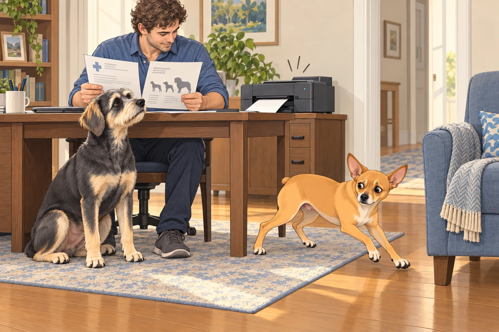
Getting the photos had almost defeated the letter. Neet refused to appear beside Buddy: two dogs in one picture was practically a confession.
Buddy sat in the patch of light by the desk anyway. He wanted the board to see who was waiting for whom.
Their human put the camera down and held out a hand. Neet came close enough for a scratch behind the ears. When Buddy scooted over, the human made room for both.
The shutter clicked before Neet remembered to object.
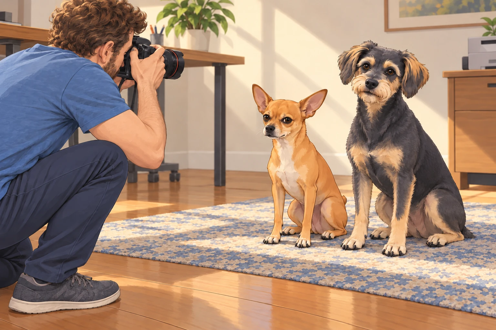
Their human checked the photograph, smiled and returned to the letter. Neet stayed beside Buddy until the printer made its second noise. Then he took cover behind the chair, which he judged a reasonable compromise.
Nobody promised that the diagram or the photograph would change a rule. But the human read the letter twice, attached everything carefully and sent it. Buddy watched his shoulders relax when it was done.
But while the paperwork made its way through bureaucracy, Neet remained underground. Buddy became the face of the operation— greeting neighbors, wagging extra hard, even licking the mailman.
Neet monitored it all from behind a ficus, wearing sunglasses and sipping beef broth like it was whiskey.
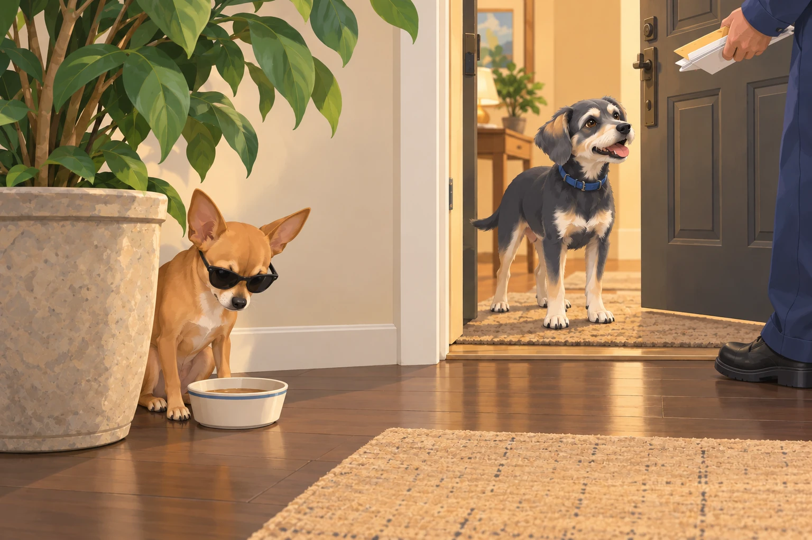
Buddy nearly spoiled public relations on day one. Mrs. Glenda smelled of hard candy, and he inspected her handbag with the confidence of a customs officer.
Their human guided him back. Buddy sat instead. Mrs. Glenda scratched his chin.
That worked better.
On the next visit Buddy greeted her, then returned to the ficus. Neet peered between two leaves.
“You're meant to mingle.”
“I did.”
“You're exposing headquarters.”
Buddy settled beside the pot. “Headquarters is lonely.”
Neet offered him the edge of the broth bowl. Buddy took one lick, sneezed at a leaf and stayed. Public relations could include the public behind the plant.
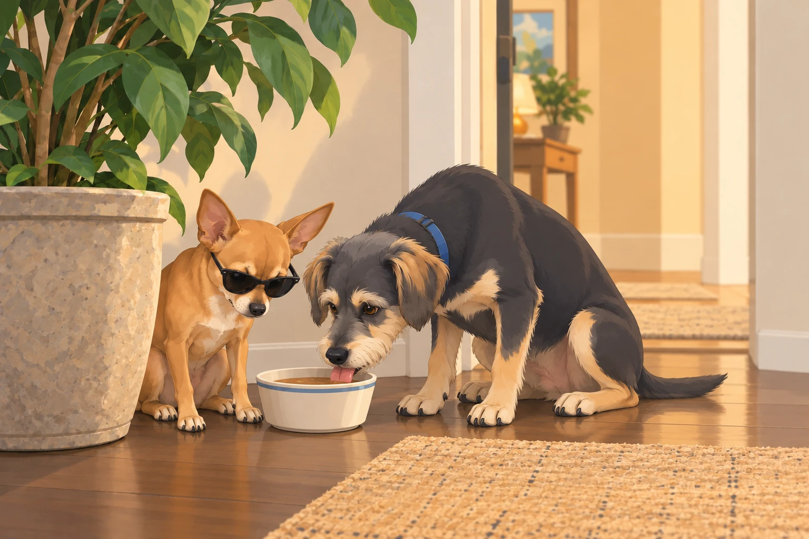
To Be Continued…
No eviction notice had come. Yet.
Grubbs still lurks.
Neet still hides.
Buddy still believes they can merge into a “MegaDog” through synchronized tail wagging.
And every evening, at 7:05pm sharp, the stairwell echoes with the sound of paws. Silent, stealthy, ridiculous.
At the bottom, Buddy waits for Neet.
“Same time tomorrow, Todd?” he whispers.
Neet bumps his shoulder and leads the way. Two dogs go to the park together, however many the building prefers to count.
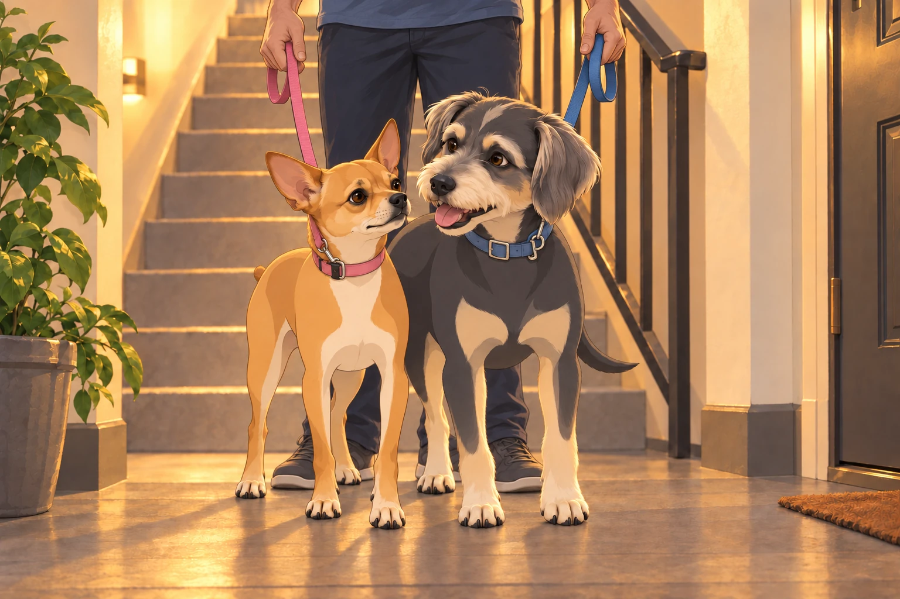